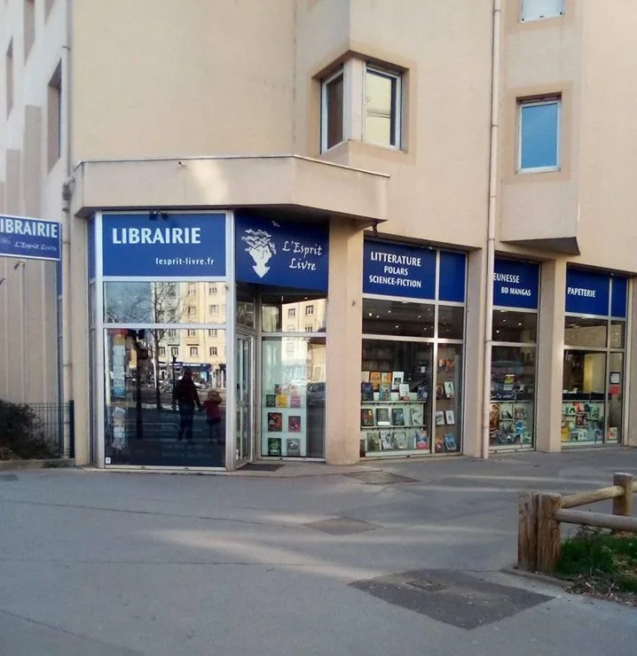

Sélection · Été 2026
Les coups de cœur à glisser dans la valise
Une sélection de l'équipe en littérature, polar, imaginaire, histoire, philosophie, voyages, jeunesse et bande dessinée.
Voir la sélection →Librairie généraliste indépendante de proximité à Lyon, L'Esprit Livre vous accueille parmi la littérature française et étrangère, la jeunesse, le polar, l'imaginaire, la BD, les mangas, les sciences humaines et bien plus encore.


Sélections saisonnières, rencontres, dédicaces et rendez-vous jeunesse : la librairie vit au rythme des livres et de celles et ceux qui les font.
Une sélection de l'équipe en littérature, polar, imaginaire, histoire, philosophie, voyages, jeunesse et bande dessinée.
Voir la sélection →
Albums, premières lectures, romans ados et documentaires.

La librairie annonce un beau programme de rentrée, avec un indice : « 3 fois le Japon ».
Une équipe appréciée pour son écoute, ses recommandations et sa passion de la lecture.
Vous ne trouvez pas un titre ? Contactez la librairie pour savoir s'il peut être commandé et mis de côté.
Rencontres, dédicaces, lectures jeunesse et ateliers font vivre la librairie au-delà des rayonnages.

L'Esprit Livre est une librairie généraliste indépendante située dans le quartier Dauphiné–Lacassagne, entre Montchat et Monplaisir. Des romans aux essais, des albums jeunesse à l'imaginaire, la sélection couvre une grande diversité de lectures.
« Toujours d'excellent conseil. Il est agréable d'écouter ces passionnés vous parler lecture. »
La librairie bénéficie du Label LIR depuis 2012.
Librairie Indépendante de RéférenceFrançaise, étrangère et en version originale.
Thriller, roman policier, science-fiction et fantasy.
De la naissance à l'adolescence.
Bandes dessinées adultes et jeunesse.
Des rayonnages denses, des tables de nouveautés et un espace jeunesse généreux.
« Superbe librairie qui mérite amplement ses 5 étoiles, propre et bien rangée par catégories, du choix (et ce qui n'y est pas se commande rapidement), système de remise fidélité et surtout un personnel agréable toujours de bon conseil et ouverts aux échanges et dialogues. Mention au patron très gentil qui en plus fait des traductions sur son temps libre. Venez soutenir cette librairie de quartier. »
« Cette libraire est une pépite, j'y retourne à chaque occasion. La sélection est top. Mention spéciale pour le rayon jeunesse qui est incroyable ! »
« Supers conseils, à l’écoute et on sent la passion pour la lecture dans les mots du libraire. Excellent ! »
« Toujours d'excellent conseil. Il est agréable d'écouter ces passionnés vous parler lecture. »
« Une librairie dynamique aux choix contemporains, dont l'équipe aimable et souriante donne de très bons conseils. On y trouve non seulement une grande variété de genres et catégories, mais aussi des propositions de titres originaux qu'on ne trouve pas partout (en littérature étrangère et BD notamment). Les commandes sont assez rapides et les petites fiches rédigées avec soin à la main par l'équipe pour présenter les livres donnent envie de tout lire ! Un plaisir et une chance d'avoir une telle librairie de quartier. »
76 rue du Dauphiné
69003 Lyon
Appelez la librairie ou écrivez-nous en indiquant le titre et l'auteur. L'équipe pourra vous renseigner sur la disponibilité et la commande.